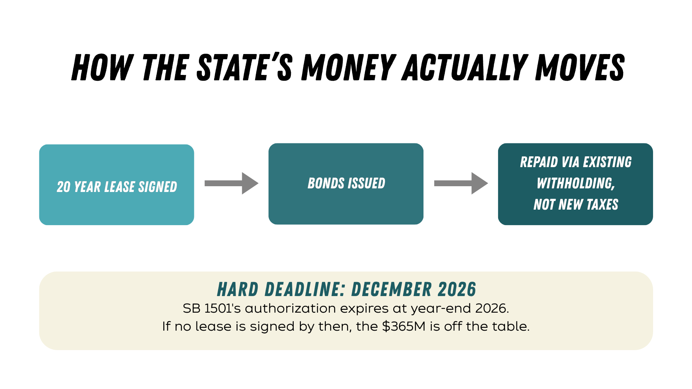
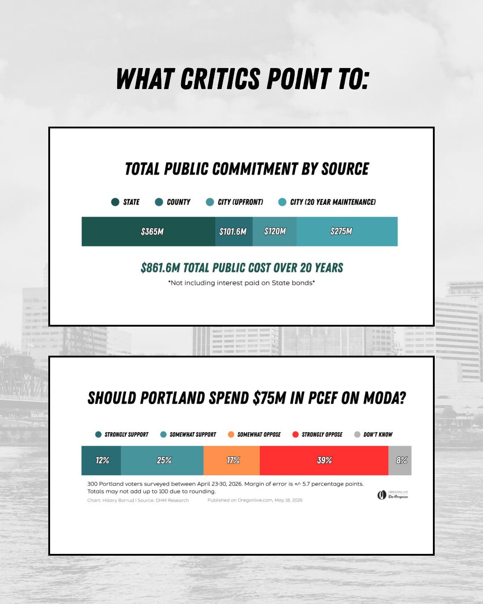
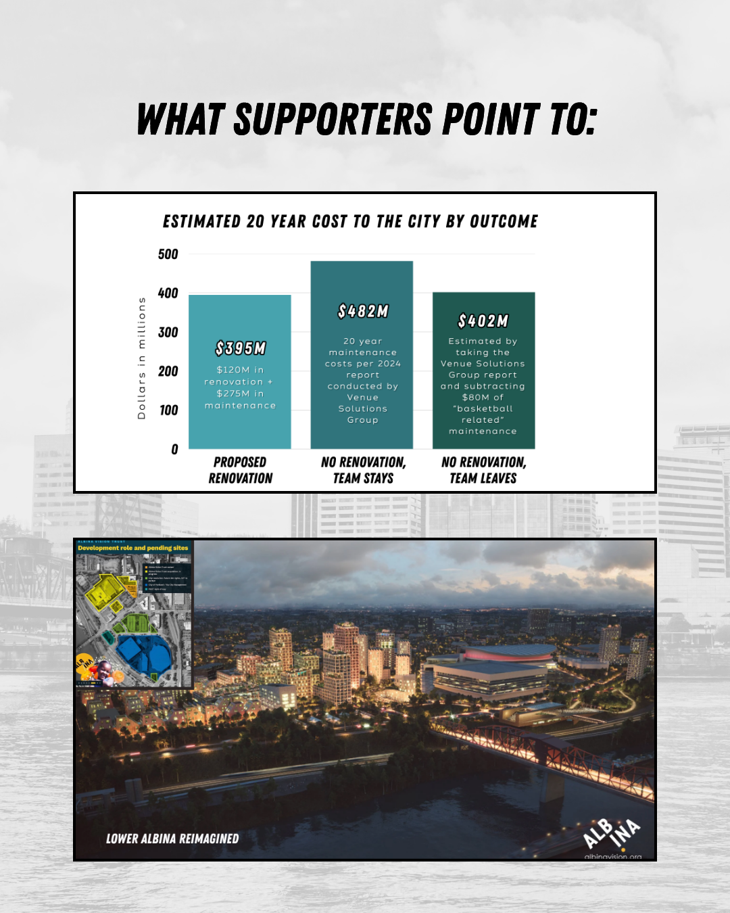

The Short Version
The most obvious question first: how much is the city obligated to pay under each possible outcome, over 20 years?

From here, every remaining graphic from the site, in order, with one line each. Click any heading for the full page and sourcing.
Why the city owns the Moda Center

The original 1995 lease guaranteed the arena would revert to the city for free once the lease ended, so the city was always going to end up owning it, regardless of this renovation deal.
Read the full pageThe Arena's Neighbor: Albina Vision Trust

A nonprofit has spent years working to redevelop the historically Black Lower Albina neighborhood next door, and has publicly supported the renovation because the arena functions as an anchor for that effort.
Read the full pageHow we arrived at the different funding figures

Of the roughly $586.6M pledged so far, the state and county are covering most of it, leaving the city responsible for $120M upfront plus up to $275M in maintenance over 20 years.
Read the full pageThe state of Oregon's funding commitment

The state's $365M comes with no new taxes, but it isn't guaranteed. It's contingent on a signed 20-year lease, and the authorization expires at the end of 2026.
Read the full pageA timeline of the state's funding commitment

A dated, sourced chronology of the Blazers' sale and the state's funding push, laid out in order without drawing conclusions about what caused what.
Read the full pageThe city's funding commitment

The city's total commitment is $395M over 20 years: $120M for construction now, and up to $275M in maintenance after that.
Read the full pageHow this impacts the city's budget

The city still needs to find $80M of its $120M construction share, and PCEF is the most-discussed, and most-contested, way to help close that gap.
Read the full pageThe Portland Clean Energy Fund

PCEF is bringing in far more than expected, but nearly all of it is already earmarked, and only PCEF's own independent board, not the city, can decide whether to use any of it here.
Read the full pageLong-term cost obligations, by outcome
Renovating is cheaper than the city's own estimate for maintaining the arena as-is, but the full public commitment across all three governments tops $861.6M.
Read the full pageWeighing both sides


Both sides are citing real, sourced facts. This page lays out the strongest version of each case, side by side.
Read the full page